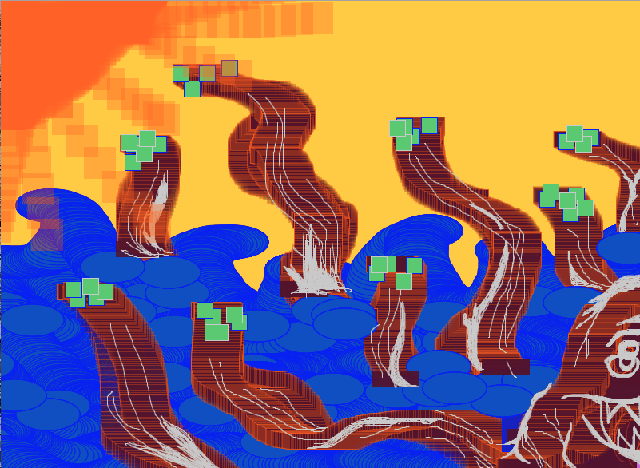

Project Title: The Kraken
The main concept of this drawing is about a monstrous kraken. I wanted to depict this monster to show the different uses of brushes, mainly ellipses and rectangles. The different sized brushes & colors helped with the details of creating this figure. I wanted to have fun, but also I wanted to utilize the code that was given on Canvas.
var img; var initials ='jm'; // your initials var choice = '1'; // starting choice, so it is not empty var screenbg = 250; // off white background var lastscreenshot=61; // last screenshot never taken function preload() { // preload() runs once, it may make you wait // img = loadImage('knife.jpg'); // knife.jpg needs to be next to this .js file // you can link to an image on your github account img = loadImage('https://dma-git.github.io/images/cat2-sm.jpg'); } function setup() { createCanvas(800, 800); // canvas size background(255, 204, 0); // use our background screen color } function draw() { if (keyIsPressed) { choice = key; // set choice to the key that was pressed clear_print(); // check to see if it is clear screen or save image } if (mouseIsPressed){ newkeyChoice(choice); // if the mouse is pressed call newkeyChoice } } function newkeyChoice(toolChoice) { //toolchoice is the key that was pressed // the key mapping if statements that you can change to do anything you want. // just make sure each key option has the a stroke or fill and then what type of // graphic function if (toolChoice == '1' ) { // first tool function draw () { background(204); stroke(102); line (40, 0, 70, height); if (mouseIsPressed == true ) { stroke(0); } line (0, 70, width , 50); } } else if (toolChoice == '2') { // second tool fill(80, 20, 45, 80); line(mouseX, mouseY, pmouseX, pmouseY); rect(mouseX, mouseY, 60, 20) } else if (toolChoice == '3') { // third tool stroke(300, 100, 0, 80); line(mouseX, mouseY, pmouseX, pmouseY); } else if (toolChoice == '4') { stroke(0, 0, 255) fill(20, 75, 200); ellipse(mouseX, mouseY, 80,40) } else if (key == '5') { // this tool calls a function stroke(0, 0, 255); testbox(); // make testbox do something! line(mouseX, mouseY, pmouseX, pmouseY); } else if (toolChoice == '6') { stroke(200); line(mouseX, mouseY, pmouseX, pmouseY); } else if (toolChoice == '7') { fill(100, 200, 100); rect(mouseX, mouseY, 20, 20); } else if (toolChoice == '8') { noStroke() fill(200, 100, 220); rect(mouseX, mouseY, 90, 90); } else if (toolChoice == '9') { fill(300, 100, 0, 80); rect(mouseX, mouseY, 40, 40); } else if (toolChoice == '0') { stroke(0, 0); fill(random(255), random(255), random(255), random(255)); rect(mouseX, mouseY, 50, 50); } else if (toolChoice == 'g' || toolChoice == 'G') { // g places the image we pre-loaded image(img, mouseX, mouseY); } } function testbox() { // this is a test function that will show you how you can put your own functions into the sketch x = mouseX; y = mouseY; fill(200, 20, 20); rect(30+x, 120+y, 100, 100); fill(20, 20, 200); rect(x-34, y-56, 100, 100); fill(20, 20, 20); rect(x,y,x+34, y+20); } function self_portrait(){ // this function draws a self portrait when called // you will need to call this, perhaps as one of your keypress functions } function clear_print() { // this will do one of two things, x clears the screen by resetting the background // p calls the routine saveme, which saves a copy of the screen if (key == 'x' || key == 'X') { background(screenbg); // set the screen back to the background color } else if (key == 'p' || key == 'P') { saveme(); // call saveme which saves an image of the screen } } function saveme(){ //this will save the name as the intials, date, time and a millis counting number. // it will always be larger in value then the last one. filename=initials+day() + hour() + minute() +second(); if (second()!=lastscreenshot) { // don't take a screenshot if you just took one saveCanvas(filename, 'jpg'); } lastscreenshot=second(); // set this to the current second so no more than one per second }